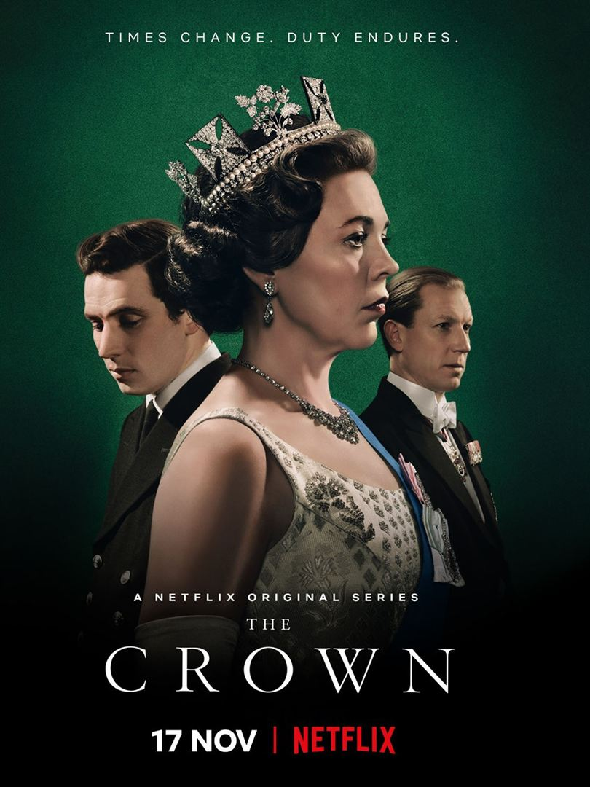

<section class="article-netflix py-5">
  <div class="container">
    <div class="row justify-content-center">
      <article class="col-sm-8">
        <h2>The Crown</h2>
        <h5>La vie pas si rêvée de la famille royale d’Angleterre, 12 mars 2021</h5>
        <p>
         « The crown » est une série créée par Peter Morgan et diffusée depuis le 4 Novembre 2016 sur Netflix. Actuellement 4 saisons sont disponibles sur la plateforme mais le show est prévu pour 6 saisons composées chacune de 10 épisodes d’environ une heure.
        </p>
        <br>

        <div class="article_img">
          
        </div>

        <br>

          <p>
            <strong class="emphase">De quoi ça parle :</strong> Le show couvre la vie de la reine Elisabeth II et de sa famille.
          </p>
          <br>
          <p>
            <strong class="emphase">Mon avis :</strong> Fascinée depuis mon plus jeune âge par l’Angleterre et la famille royale, j’ai longuement hésité avant de regarder cette série. Enorme erreur de ma part, je l’admets.
Les acteurs sont d’une justesse exceptionnelle et vous plonge dans ce quotidien avec une facilité déconcertante. Vous serez tour à tour pris de compassion puis de haine envers les différents personnages. Les décors et les paysages sont magnifiques et vous donnent envie de vous rendre au pays de la pluie.
Bien que romancée à certains passages, la série est relativement fidèle à l’histoire du règne de la reine Elisabeth II et poussera votre curiosité à faire des recherches pour dénicher le faux du vrai.
Que l’on aime l’Angleterre ou non, que l’on aime la famille royale ou non, cette série vous mènera sur le chemin d’une réflexion personnelle quant à l’acceptation d’une vie dirigée par un protocole parfois désarmant sur des décisions personnelles qui nous sembleraient, à nous, simple communs des mortels, si faciles à prendre.
          </p>

          <br>
          <p>
            <strong class="emphase">Anecdote :</strong> « The crown » a reçu plusieurs récompenses notamment deux Screen Actors Guild Awards pour les acteurs Claire Foye et John Lithgow.
Le scénariste, Peter Morgan, connaissant bien la famille royale souhaite respecter la réalité historique. Néanmoins il s’autorise d’apporter des éléments de pure fiction pour mettre en valeur certains thèmes.

          </p>

        <br>

        <iframe width="560" height="315" src="https://www.youtube.com/embed/Gv4MQIQAFMs" title="YouTube video player" frameborder="0" allow="accelerometer; autoplay; clipboard-write; encrypted-media; gyroscope; picture-in-picture" allowfullscreen></iframe>

        <br>

        <p class="signature text-end"><strong>Angèle</strong></p>
      </article>
    </div>
  </div>
</section>


